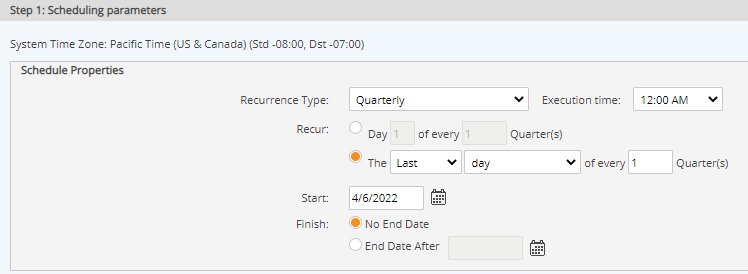

A report may be scheduled to run automatically at desired intervals. when a report has an automatic execution schedule, the report will be run as scheduled and cached for viewing. Notifications may be sent out to inform users that the report is available, and the report can then be viewed at the user’s convenience.
For the following types of reports an option is also available to save report output to parameters in the system.
The number of reports of each type that are cached depends on the cache size that is set for the system.
To schedule automatic report execution:
Specify the Begin and End dates for the data to include in the report.
These settings are used to dynamically determine the appropriate execution of the report. This is similar to specifying a date range for filtering purposes when a user runs a report. However, the data range is generally relative to the run date of the report.
Absolute: allows you to specify a specific start or end date. (ex: 7/1/2010 - 6/30/2011)
Relative: allows you to specify a relative no. of days/weeks/months/quarter years. For Start date, it is relative to the execution date of the report. (ex. 1 month before report runs). For the End date, it is relative to the Start Date. (ex: 1 month after the start date).
The rest of the options are all relative to the report execution date (working in combination with the "Scheduling Parameters" fields). See the table at the end of this section for a description of what the Start Date and End Date options mean.
Options can be combined in many different ways to achieve the desired data set in your resulting report.
Show cumulative data since monitoring began by setting an absolute start date (1/1/yyyy) and a relative end date (i.e., End of Previous Calendar Month). If the report runs monthly on the 5th of the month, it will get the data from the specified start date through the last complete month.
To schedule a rolling 12-month emission report to run on the last day of each month, set the Begin Date to Relative, 12 Months before the execution date and the End date to the end of Current Month. To schedule the same report to run on, for instance, the 10th of the month and include up data up through the previous month, set the Begin Date to Relative, 13 Months and the End Date to Previous Calendar Month.
Choose the default output format.
The report will be cached in the default output format. However, users who view the reports later may choose to view it in another format.
Set the Report Scheduling Parameters to specify when you want the report to run.

Click Save.
Options for Start Date and End Date for scheduled report execution are explained in the following table:
|
Option |
Start Date |
End Date |
|---|---|---|
|
Absolute |
First day of data to include in report (always start report from this date) |
Last day of data to include in report (always end report on this date) |
|
Relative Start Date is always relative to execution date. End Date is always relative to start date. |
Number of days/weeks/months/quarters or years previous to run date of report. x days=run date - x days x weeks=run date - (x*7) days x months=same day of month x months ago x quarters=same day of month 3, 6, 9... months ago x years=same date x years ago |
Number of days/weeks/months/quarters or years after the Start Date Start Date + x days Start Date + x weeks (or x*7 days) Start Date + x months (on same day of month as start date) Start Date + x quarters (on same day of month x*3 months after start date) Start Date + x years (on same date x years after start date) |
|
Current Month |
First day of calendar month in which report runs |
Last day of calendar month in which report runs |
|
Current Quarter |
First day of calendar quarter in which report runs 1/1, 3/1, 9/1, or 12/1 |
End of calendar quarter in which report runs 3/31, 6/30, 9/30, or 12/31 |
|
Current Year |
Beginning of current year in which report runs (1/1/yyyy) |
End of current year in which report runs (12/31/yyyy) |
|
Previous Month |
Beginning of previous calendar month relative to run date |
One month prior to run date (same date last month) |
|
Previous Quarter |
Beginning of previous calendar quarter relative to run date 1/1, 3/1, 9/1, or 12/1 |
Three months prior to run date (same day of month 3 months ago) |
|
Previous Year |
Beginning of previous calendar year relative to run date |
One year prior to run date (same date last year) |
|
Previous Calendar Month |
- |
End of previous calendar month relative to run date |
|
Previous Calendar Quarter |
- |
End of previous calendar quarter relative to run date. 3/31, 6/30, 9/30, or 12/31 |
|
Previous Calendar Year |
- |
End of previous calendar year (12/31/yyyy) |
|
Year Before Last Year |
Beginning of calendar year before last year 1/1/yyyy where yyyy=run date year minus 2 |
End of calendar year 2 years prior to run date 12/31/yyyy where yyyy=run date year minus 2 |